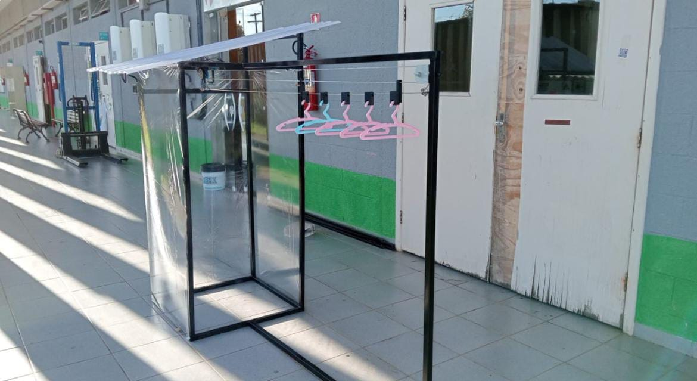
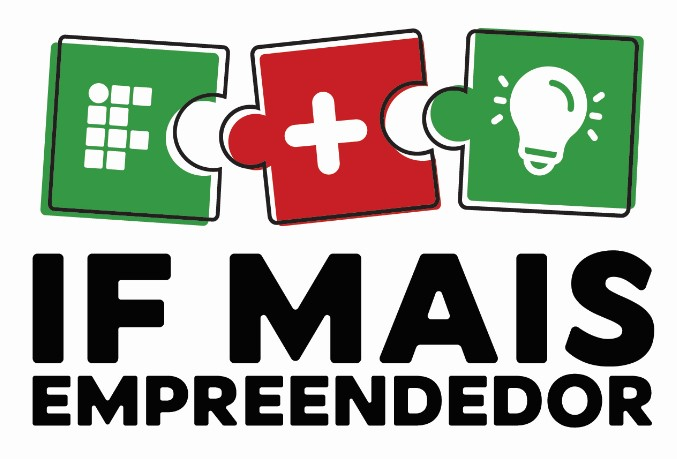
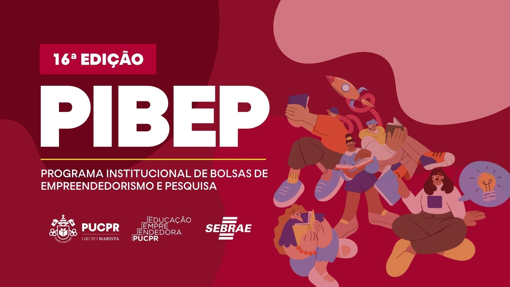

Guilherme Muniz
Guilherme Muniz
Guilherme Muniz
Guilherme Muniz

No último ano do Ensino Médio Técnico, desenvolvi meu projeto de TCC, que consistiu no desenvolvimento do zero de um Varal Inteligente, que detectava a chuva por meio de um sensor e fazia o recolhimento automático das roupas. Nesse projeto, atuei em todas as etapas do desenvolvimento, desde a concepção da ideia, planejamento, validação de mercado, esquema elétrico, programação, modelagem 3D da estrutura mecânica e peças impressas em impressora 3D, apresentação do projeto em Feira de Ciências e banca final. Esse projeto me agregou muito conhecimento técnico, como a programação em C, porém acredito que o maior aprendizado foi a experiência em desenvolver um projeto real do zero, lidar com gestão do tempo (metologias ágeis), gerir uma equipe, resolver problemas e lidar com imprevistos, esses são aprendizados que levarei para minha vida profissional e pessoal.

Durante o período de outubro de 2024 a março de 2025, participei do programa de iniciação científica IF Mais Empreendedor, no qual era responsável por realizar uma consultoria para uma empresa no Vale do Ribeira, visando o aumento do lucro e produtividade da empresa. Nesse projeto, pude me aperfeiçoar em habilidades como comunicação, cooperação, adaptabilidade, análise de dados e resolução de problemas.

Em 2026 participei do Programa Institucional de Bolsas de Empreendedorismo e Pesquisa (PIBEP) da PUCPR, no qual adquiri conhecimento em desenvolvimento de ideias de negócio, validação de mercado, planejamento estratégico, produção de MVP's e apresentação de pitchs. Nele desenvolvi uma ideia de negócio de tecnologia voltado para a automação de processos de empresas, atualmente estou buscando conhecimento em desenvolvimento de software e automação para transformar essa ideia em um projeto real.